Los hombres hábiles ambicionan convencer, los hombres mediocres o sin talento no aspiran sino mandar.—José Joaquín Olmedo (1780-1847).
Jaime Rodríguez Calderón, El Bronco (JRC), intervino 52 veces en el primer debate (véase gráfica de abajo). Si te fijas, 52 veces equivale a un 1.32 veces más que Ricardo Anaya Cortés (RAC), quien fue el segundo que más veces intervino (38 veces). ¿Por qué tanta diferencia? Obviamente, no es el tiempo. Todos los candidatos gozan del mismo tiempo para exponer sus ideas. Sin embargo, el Bronco hizo intervenciones muy cortas para referirse a sus oponentes y contestar a las preguntas del moderador derivadas de propuestas polémicas (v.gr. la idea de mochar manos). Aparentemente, fue advertido de esta circunstancia por sus asesores, dado que en el segundo debate sus intervenciones disminuyeron, acercándose a las de los otros candidatos. Quizá los asesores le recordaron la frase de Winston Churchill: Nunca llegarás a tu destino si te detienes a tirarle piedras a cualquier perro que ladre. Por supuesto, genio y figura hasta la sepultura, y en el tercer debate retomó su nivel de intervenciones y las superó (56). Mientras que al Bronco lo amonestaban en su casa por hablar demasiado, a Andrés Manuel López Obrador (AMLO) lo animaban a entrarle a los cocolazos. Su nivel de intervenciones fue incrementándose hasta coronarse campeón con 63 en el último debate. En general, a JRC nadie le quitó lo bronco, terminó con 153 respingos en total. RAC y AMLO, muy de la mano en sus apariciones. José Antonio Meade Kuribreña (JAMK), en último lugar en sus intervenciones: 114 en total. Recuérdese que Margarita Zavala Gómez del Campo (MZGC) se autodescalificó después del primer debate, por lo que no tiene caso hablar de su desempeño. JAMK, como todos los candidatos oficiales, haciendo juegos malabares para sortear el desgaste que le hereda el gobierno saliente y las limitaciones que le impone su estatus de candidato oficial. Difícil remontar teniendo a cuestas esas dos variables. Se requiere mucho carisma y deseo de llegar, digo yo. ¿Es bueno o malo hacer muchas intervenciones? A según, como se dice en el póker: ¡como veo doy!
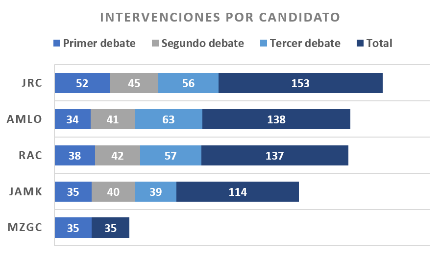
Quien más palabras recetó al público mexicano fue JAMK, 10,643 en total (véase gráfica de abajo). Si lo comparas con AMLO, quien es de todos conocida su forma pausada de hablar, profirió un 53% más de palabras que AMLO. Perdedor en cuanto a metralla verbal, éste pronunció 6,953 palabras en total (ratio JAMK/AMLO: 10,643/6,953 = 1.53). Sin duda, hablar es un arte del dominio de políticos, intelectuales, artistas, entre otros profesionales, pero hablar mucho, en general, no es bien visto. “Las palabras son como las hojas: cuando abundan, poco fruto hay en ellas”1. La razón es simple, el significado de las cosas se concentra en unos cuántos vértices relacionados. El caso extremo es la hipnosis y la sugestión que obligan a la persona a concentrarse en un solo aspecto; no importa que sea contradictorio. De hecho, es útil la contradicción para romper cualquier resistencia racional. El gran maestro del terror Edgar Allan Poe nos recuerda el efecto que puede tener un péndulo verbal en nuestra consciencia: “La oscilación del péndulo se efectuaba en un plano que formaba ángulo recto con mi cuerpo. Vi que la cuchilla había sido dispuesta de modo que atravesara la región del corazón. Rasgaría la tela de mi traje, volvería luego y repetiría la operación una y otra vez.” Para AMLO, el asunto es simple: repetir, repetir, repetir. “Repetir es persuadir con más detalle”2.
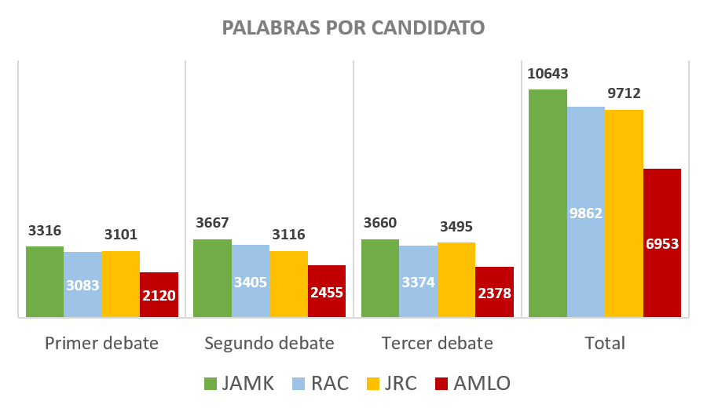Ricardo Anaya es más culto que los otros candidatos o por lo menos conoce más palabras, utilizó 2,448 palabras diferentes en promedio durante los debates (véase gráfica de abajo). AMLO mostró un vocabulario más reducido, sólo 1,723 palabras en promedio. Es posible que un mayor vocabulario sea un rasgo de mejor preparación, pero no necesariamente. Si el candidato es consciente de lo que hace querrá machacar una idea en su público. Sembrar esa idea en la mente del electorado requiere de muchas semillas de la misma especie; de las mejores semillas de la misma especie porque una sola es posible que no germine.
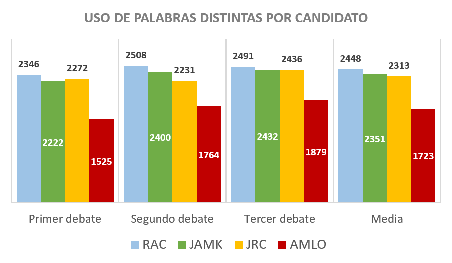Cuando la vida se nos brinda en cueros (como dice Serrat) o sea durante la universidad, le preguntaba a un querido amigo por qué siempre estaba hablando de mujeres. Él respondía con una desfachatez que provocaba risa: “Porque es el único tema que domino”. Es posible que uno tenga más que decir de algo que domina que de cualquier otra cosa. Los temas más discutidos durante los tres debates fueron: “Comercio exterior e inversión” y “Crecimiento económico, pobreza y desigualdad” (véase gráfica de abajo).
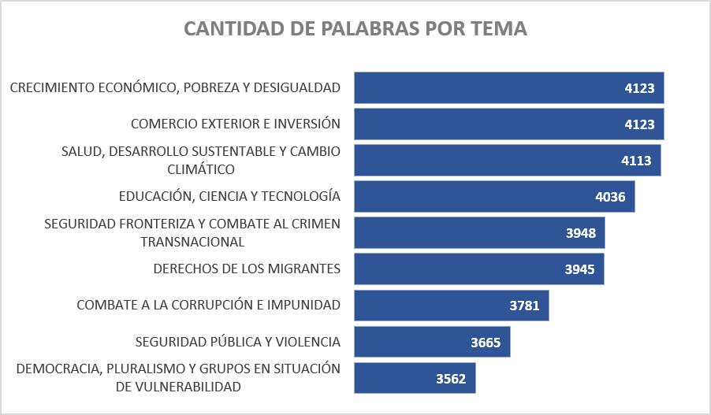
¿Y quién o quiénes abanderaban esas causas? Para AMLO el tema más extenso es “Crecimiento económico, pobreza y desigualdad”, lanzó 841 palabras para explicarlo (véase tabla de abajo). ¿Quién no recuerda el slogan: “¿Por el bien de México, primero los pobres”? JRC habló más sobre el tema “Educación, ciencia y tecnología”. ¿Será que el Bronco no lo es tanto y que apuesta a la ciencia y tecnología? Para JAMK la “Salud, desarrollo sustentable y cambio climático” y “derechos de los migrantes” son preocupaciones prioritarias. Bueno, después de todo, algo debe de saber por haber sido secretario de energía y de relaciones exteriores en los dos últimos sexenios. Para sacar al wey de la barranca, RAC cree más en “El comercio exterior e inversión”. ¿Debería de preocuparnos que la seguridad pública y la violencia es lo que menos preocupa a tres de los cuatro candidatos?
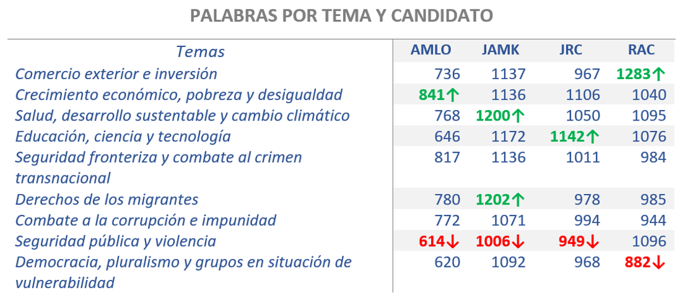 Puestas las cosas así, ¿quién se parece más a quién? El mapa de correspondencias de abajo separa a Ricardo Anaya (RAC) de López Obrador (AMLO). Éstos, otrora candidatos, son causantes de la variación máxima en los debates. El caso contrario es José Antonio Meade (JAMK) y Jaime Rodríguez (JRC), ambos al centro del mapa, no aportan nada en variación. Sin embargo, ustedes han de recordar que JRC es un candidato independiente, no postulado por ningún partido, no debería causar sorpresa su cercanía al tema de democracia y pluralismo. Por otro lado, es de todos sabido que las banderas de AMLO son combate a la corrupción y la pobreza. Se debe advertir que el tema de la seguridad pública y la violencia no es muy popular entre candidatos. Parece que al único que le interesa el tema es a RAC, aunque también le interesa el comercio exterior e inversión. ¿Acaso hay una relación entre comercio exterior e inversión y seguridad pública y violencia? Por lo menos, RAC así lo piensa: “aumentó el desempleo por una razón muy simple, porque espanta las inversiones y eso es un enemigo de la seguridad y de la paz en el país”. Por último, JAMK posicionado en un tema que a nadie le interesa, el cambio climático. No es que no sea importante, simplemente hay prioridades y las inmediatas siempre terminan imponiéndose. ¿A quién le preocupa el cambio climático cuando no tiene para comer o es víctima de la criminalidad?
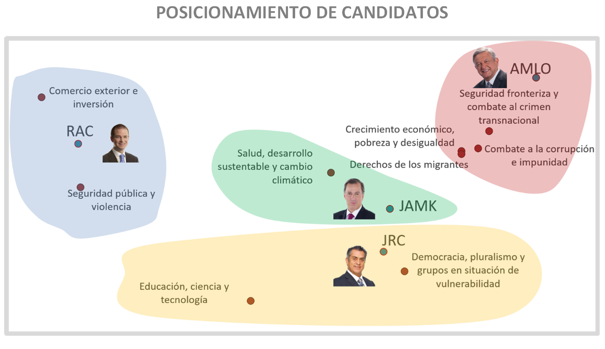Observa el gráfico circular de abajo. El sector que está por arriba del diámetro de la gráfica, el segmento café periférico que va de 0 a 133 representa los comentarios que recibió AMLO (A Amlo). Ricardo Anaya, por ejemplo, fue mencionado 31 veces (segmento periférico azul). Ahora, dirige tu mirada a la parte que está por abajo del diámetro, ¿ves el segmento de color café que va del 0 al 10?, es el número de comentarios que hizo AMLO (De Amlo); diez en total, siete de ellos dirigidos a RAC (A Rac); los tres restantes son automenciones, como esa en la que dice: “A mí me pueden decir Peje, pero no lagarto.”. Es notorio que la mayoría de los comentarios hacia AMLO son de color azul (De Rac) y verde (De Jamk). De la misma forma se puede detectar, en la parte baja del diámetro de la gráfica, que quien menos referencias hizo hacia sus rivales fue AMLO o que JAMK fue quien más se esforzó en este renglón, hizo hasta 70 referencias personales.
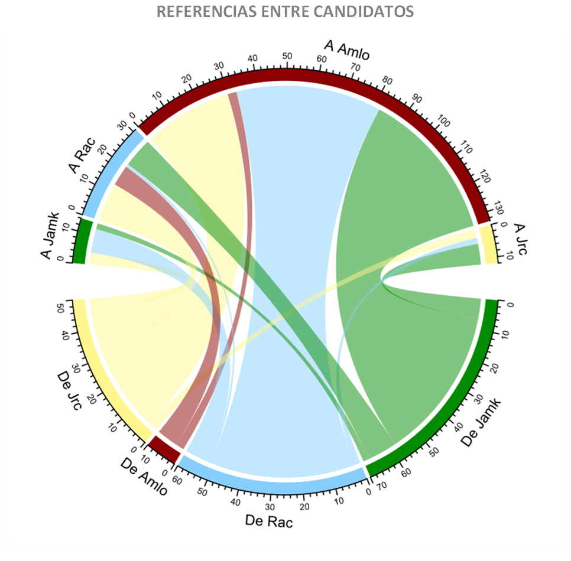
La tabla de abajo muestra los mismos datos; quizá más clara para muchos. Contando los tres debates, AMLO fue mencionado 133 veces, JAMK 14 veces, JRC 12 veces y RAC 31 veces (véase renglón de Menciones totales); es obvio, quien era el blanco de los ataques. Quien lanzó más metralla fue JAMK con 70 disparos (véase columna de referencias totales), la mayor parte de ellos dirigidos a AMLO. Por su parte, éste sólo mencionó a sus adversarios diez veces.
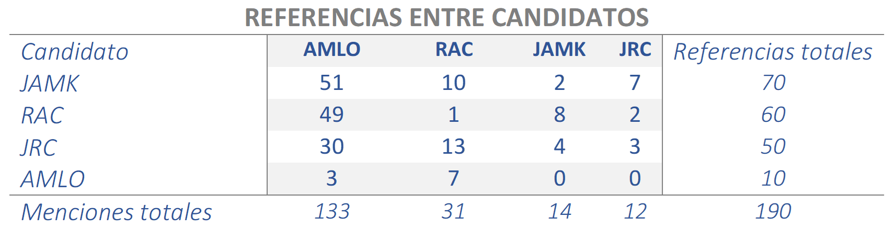
En términos generales, las menciones de un candidato a otro fueron parecidas en los debates, salvo por el primero de ellos, en el cual hubo más; el 46% se hicieron durante ese debate (88/190=.46, véase tabla de abajo). Es importante mencionar que durante los tres debates RAC mantuvo un nivel más equilibrado que los otros candidatos en sus referencias hacia sus adversarios. En palabras del mismo candidato, durante el primer debate: “Siempre he sido absolutamente consistente”.
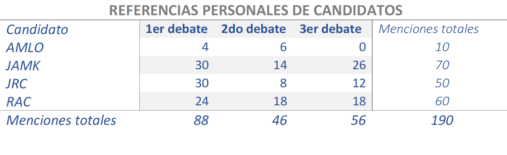Supongo que a nadie le hace feliz presentarse a debatir; más bien debe haber cierto temor, nervio. Ningún candidato se mostró feliz por debatir (véase gráfica de abajo); aunque AMLO resultó un poco más infeliz. JAMK y JRC pronunciaron más palabras asociadas a ansiedad (temor), RAC y AMLO un poco más tranquilos en este sentido; sobre todo éste último. ¿Alguien recuerda al Bronco (JRC) pidiéndoles a AMLO y RAC que se abrazaran y se dieran la mano? Pues sí, efectivamente, el Bronco resultó muy afectivo, pero le ganó por poco JAMK. En ese sentido AMLO es quien menos afecto muestra. Debate y agresividad van de la mano, se nota que AMLO y RAC fueron los mayores protagonistas de los tres encuentros; fueron prolíficos en palabras que denotan agresividad. Claramente, AMLO sabía o esperaba la gloria. Gloria se refiere a ganar, vencer, victoria, triunfo, presidencia, gobierno, etc.
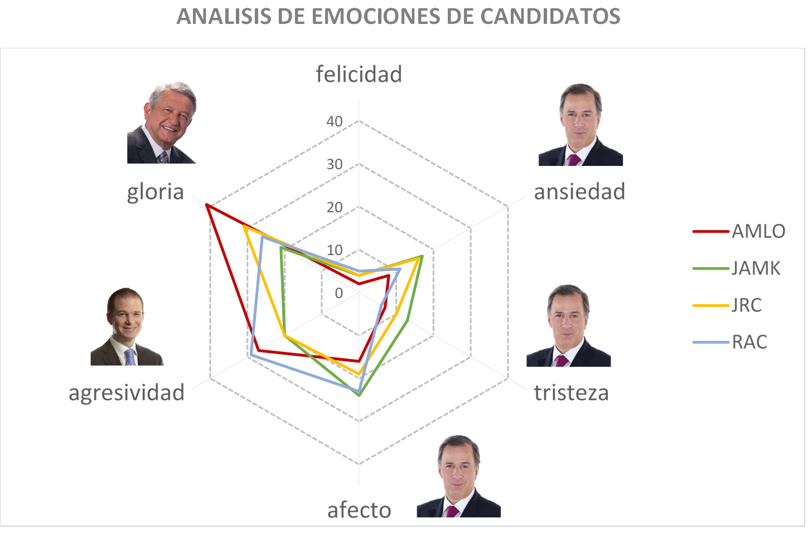Como hemos visto, los candidatos AMLO y ANAYA no sólo llevan la voz cantante en los debates, sino también tienen visiones encontradas respecto al país que desean. Anaya dedicó el 19% de su tiempo (véase gráfica de abajo) a convencer sobre su capacidad (poder) para solucionar problemas relacionados al mundo laboral: la reforma educativa, los maestros, salarios bajos, capacitación, Internet; además de algunas cuestiones relacionadas a la salud, por ejemplo, diabetes (nodos color azul cielo). El segundo tópico del que más habló fue la inversión, economía, y seguridad del país (nodos color verde); en estos asuntos utilizó el 16% de su tiempo. El tercero y cuarto asuntos al que RAC invirtió tiempo (13%) fueron al Estado y la unión o dignidad del país, poniendo como ejemplo a Trump, los migrantes e insultos que reciben de él (nodos violetas); así como al combate a la corrupción (nodos naranjas). Y como no hay quinto malo, dedicó 12% de su tiempo a hablar de AMLO (nodos rojo marrón). Por supuesto, los vértices de otros colores forman sus propios conglomerados que se asocian, en mayor o menor medida, a los descritos anteriormente.
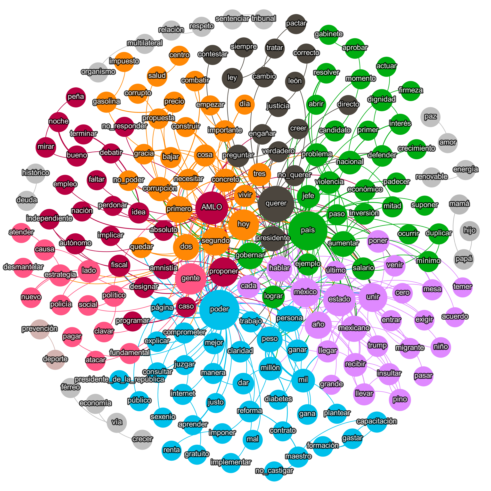 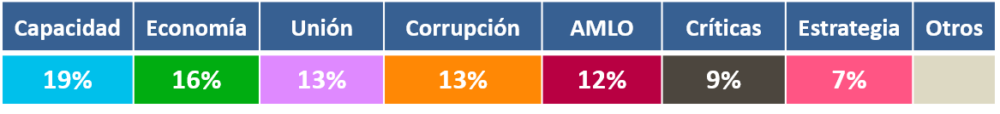 Por el otro lado, AMLO empleó buena parte de su tiempo a expresar su interés en gobernar, el 25% del tiempo se refirió a ello (véase nodos violetas en el gráfico de abajo). En segundo lugar, destacó el estado en que se deja al país (nodos verdes), para ello, utilizó un 17% del tiempo que tenía. En tercer término, habló sobre corrupción un 13% del tiempo. Dedicó otro 10% a hablar del sexenio de Peña Nieto (nodos obscuros); un 8% a la transformación llamada 4ta T (nodos naranjas); y otro 7% al llamado gasolinazo (nodos rosa encendido); entre otros temas.
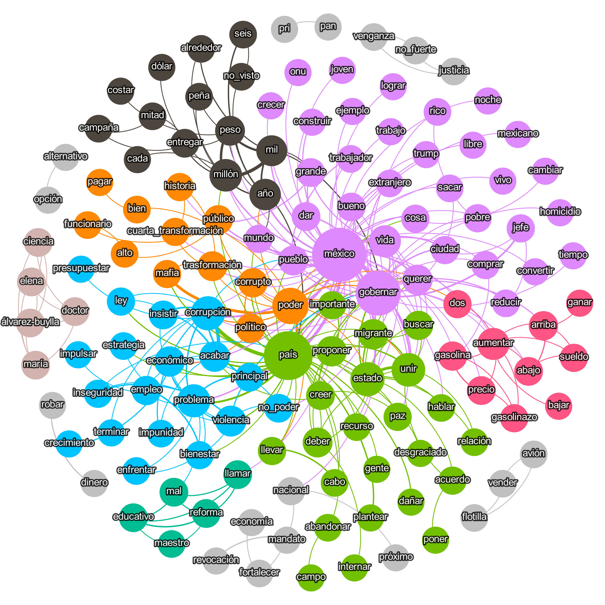 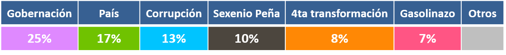
Cabe señalar que los tópicos anteriores son los más importantes, los candidatos hablaron de muchas otras cosas. Sin embargo, ambos grafos de RAC y AMLO contemplan sólo los asuntos de mayor envergadura.
Así como las marcas comerciales buscan y encuentran sus fortalezas o debilidades y estudian las de la competencia para posicionarse entre los consumidores. Cualquier candidato político debe hacer lo propio. En el caso de un político es más que cierta la frase que reza: “Orador no convencido, a nadie ha persuadido”. La única forma de convencer es creer en lo que predicas. El dato duro convence más que la opinión del asesor más preparado. El análisis del lenguaje natural es un excelente instrumento para preparar el discurso de cara a un debate o para hablar a un público elector.
El procesamiento de lenguaje natural está en una fase muy temprana, apenas gatea. No obstante, revela mucho más de lo que uno puede apreciar en un evento en vivo como es el ejercicio democrático del debate político. Consideramos que este tipo de análisis es un instrumento complementario que da elementos de juicio para que la ciudadanía esté mejor informada a la hora de tomar su decisión sobre quién votar. Así como el INE (Instituto Nacional Electoral) hace monitoreo de medios, encuestas de opinión, conteos rápidos, entre otros, debería hacer este análisis, probablemente más imparcial que el que presentamos aquí.
Aun cuando este análisis se basa en datos duros, proviene de un formato rígido de debate, como el impuesto por el INE: tiempos de participación, temas, replicas, etc., y se da en condiciones poco naturales. De ninguna manera define a los candidatos y sus propuestas. Sin embargo, señala aspectos de ellos que pueden o no ser confirmadas con base en otras herramientas de análisis.
Buscando en el sitio del INE las versiones estenográficas de los debates, sólo pudimos encontrar la del primer debate; ojalá y el INE pudiera proporcionar este material bien editado e integrado, que tanta falta hace a los investigadores. Finalmente, las transcripciones las descargamos de este sitio al cual damos nuestro agradecimiento.
*Dedicamos este artículo con mucho cariño al recuerdo de nuestro gran amigo David Piña Estrada, quien falleciera hace un par de meses a causa de esta pandemia por COVID-19. Descanse en paz, nuestro querido amigo.